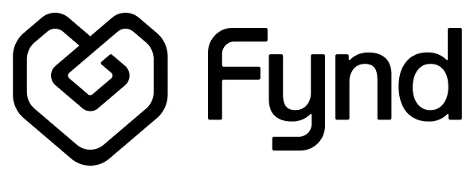

{{ p.name }}
{{ p.status }}Problem
{{ p.problem }}
What I built
{{ p.built }}
My role
{{ p.role }}
Product screenshot
Placeholder — send me the image
Stack
Product Manager · 2 years PM experience · Former Software Engineer
4 years across technology and product, from engineering at Fynd / Reliance Retail to working with LehLah's founding team across consumer growth, monetisation and B2B SaaS.

Written as product decision documents: problem, options, trade-offs, what shipped, what it moved.
Two years of building systems inside one of India's largest retail ecosystems — the reason my feasibility calls carry specifics.
Some of my most valuable product context came from work that wasn't technically part of my job description.
The best product context doesn't always arrive in Jira. Sometimes you have to go find it.
Shipping inside an enterprise ecosystem meant the hard part was rarely the code — it was sequencing the work across teams that didn't share a backlog.
Longer pieces about things I learned by doing the work, not by reading about it.
Hypotheses, teardowns and things I can't stop thinking about.
I started my career in software engineering because I wanted to understand how technology gets built.
Over time, I became increasingly interested in the decisions that happened before the code: what problem to solve, why it mattered, which trade-offs to make and whether the product actually worked.
That led me into Product Management.
Today, I work across product strategy, execution, growth, monetisation and increasingly business problems. My engineering background continues to influence how I think about feasibility, systems and technical trade-offs.
{{ cs.subtitle }}
{{ cs.demoCaption }}
{{ p }}
Learnings from work I actually did. Separate from , which is opinions about other people's products.
{{ note.blurb }}
{{ block.text }}
{{ block.text }}
Template only — the real piece goes here. Structure supports headings, pull-quotes and long-form paragraphs.